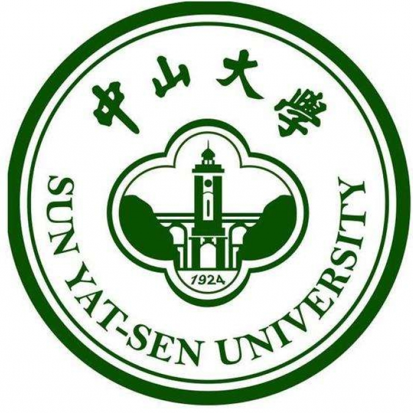
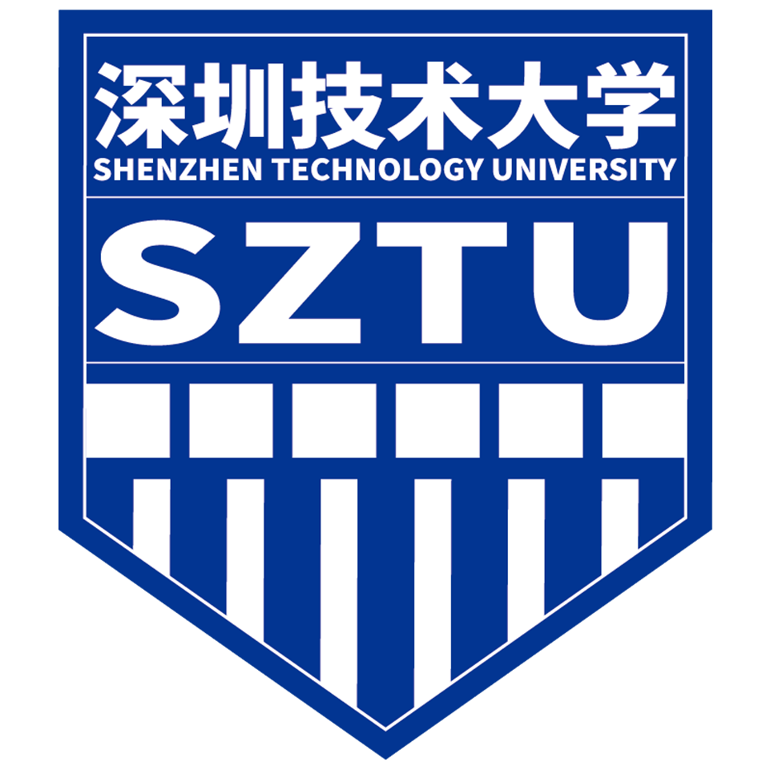

[1]
Improving Control Smoothness in Unmanned Surface Vehicle Path-Following: A Fourier-Enhanced Deep Reinforcement Learning Approach in the Presence of Observation Noises
Ocean Engineering, 2025
I am Zhuxin Zhang. I received my M.Eng. in Naval Architecture and Ocean Engineering from Sun Yat-sen University (2026) and my B.Eng. in Automotive Service Engineering from Shenzhen Technology University (2023).
My core research focuses on intelligent control and deep reinforcement learning (DRL) for marine robotic systems. To date, I have published multiple peer-reviewed papers in top JCR Q1/Q2 journals including Ocean Engineering, ISA Transactions, and Ships and Offshore Structures, with three first-author journal articles and two first-author oral presentation papers accepted at the IFAC CAMS 2025 conference. I have also contributed as a co-author to several other high-level journal publications, accumulating comprehensive end-to-end experience in academic manuscript drafting, revision, and response to reviewers.
Beyond theoretical research, I possess extensive hands-on engineering expertise in autonomous robot full-stack development. I independently built a Gymnasium-based reinforcement learning simulation platform for USV path-following and obstacle avoidance, and led a team to develop physical prototypes including a dual-propeller underactuated USV and a ROS-based differential-drive AGV, covering the entire workflow from mechanical modeling, embedded hardware integration, and sensor calibration to control algorithm design and real-machine debugging. I further refined my engineering skills through an internship at a Shenzhen-based intelligent equipment company, where I optimized AGV control performance and compiled standardized technical documentation.


Deep reinforcement learning (PPO, SAC) for robot control, including state/action space design and reward engineering. Familiar with π-series VLA model principles, architectures, and implementation. Solid foundation in modern control theory, robot kinematics, and USV intelligent control.
Proficient in C/C++, Python, and MATLAB for algorithm development and simulation. Skilled in PyTorch, Linux, Simulink, and LaTeX for academic writing.
Experienced with ROS/ROS2. Full-stack development experience for mobile robots (USV/AGV), covering mechanical design, hardware integration, sensor calibration, embedded communication, and algorithm deployment with on-site debugging. Extensive experience in closed-loop control algorithm design, simulation validation, and real-world prototype testing for autonomous systems.
Fluent in academic reading and writing, with full-cycle experience in independent writing, revision, and peer review response for 4 first-author international journal papers.
🏠 From Gaoling, Xi'an, Shaanxi
🎓 B.Eng. — Shenzhen · M.Eng. — Zhuhai
💼 Working in Shenzhen